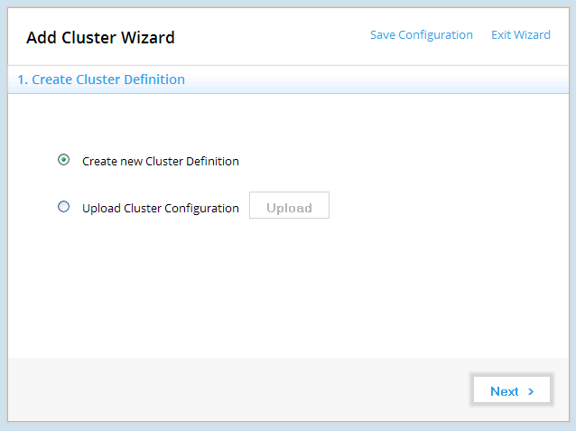
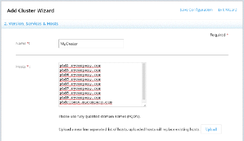
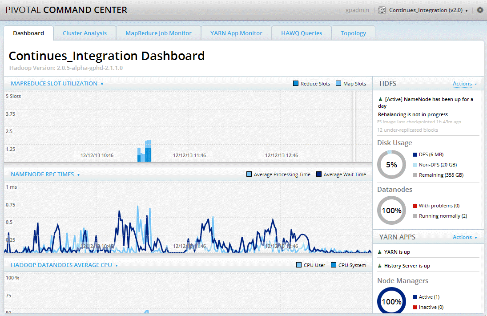
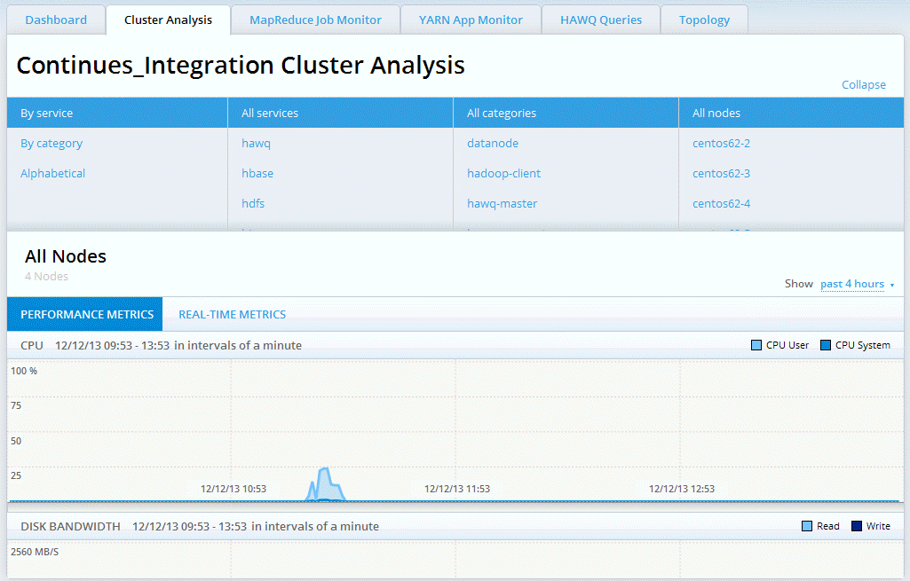

This section provides an overview of the Pivotal Command Center 2.2 user interface and details about using the application to configure and deploy a Pivotal HD Cluster.
Overview
Pivotal Command Center UI is a browser-based application for configuring, deploying, administering, and monitoring Pivotal HD clusters. At a high level, the screens consist of:
- Cluster Status Page—Provides status information about any clusters you have configured and deployed. Also provides access to the Add Cluster Wizard that allows you to configure and deploy clusters from the UI. See Configuring and Deploying a Cluster for more details.
- Dashboard—Provides an overview of your Pivotal HD cluster. This screen shows at one glance the most important states and metrics that an administrator needs to know about the Pivotal HD cluster.
- Cluster Analysis—Provides detailed information about various metrics of your Pivotal HD cluster. This provides cluster-wide metrics all the way down to host-level metrics.
- MapReduce Job Monitor—Provides details about all, or a filtered set of MapReduce jobs.
- YARN App Monitor—Provides details about all, or a filtered set of YARN applications.
- HAWQ Queries—When HAWQ (a revolutionary MPP database on Hadoop solution) is deployed on the cluster, Command Center can show the progress of all actively running queries on HAWQ.
- Topology—This screen shows you what roles have been installed on each host. You can also add and remove slaves to/from the cluster from this screen.
- Logs—This screen displays system logs based on filter criteria you select such as log levels, host name, time period, and so on.
Status indicators
Throughout the user interface the following indicators are used to indicate the status of nodes:
- Green: Succeeded
- Blue: Running
- Grey: Stopped/Pending
- Red: Killed/Failed
Logging In
Launch a browser and navigate to the host on which you installed Command Center. For example:
https://CommandCenterHost:5443
The Command Center login page is launched in your browser. The default username/password is gpadmin/Gpadmin1 (case-sensitive).
To change the default port (5443), update the port settings in the following file:
/usr/local/greenplum-cc/config/app.yml
Login Screen
The first time you launch the Command Center UI, a login screen appears showing the hostname of this instance of Pivotal Command Center.

The default admin username/password is gpadmin/Gpadmin1 (case-sensitive). You can change this password via the Settings menu.
Passwords are case-sensitive and must be at least 8 letters long and contain 1 upper-case letter and 1 number.
Once you have entered a valid username/password, click the Login button to launch the Command Center UI.
Settings
Once you have logged in, you can click the gear icon in the upper right corner of the screen from any PCC page to display the Settings menu.

From the settings menu you can select one of:
- About. Select this to display version information about this instance of PCC
- Cluster Status. Select this option to go back to the Cluster Status page to view the list of available clusters.
- Users. Select this option to add/edit user information. There are two types of users, administrative and non-administrative (read-only); you will only see this Users option if you are an administrative user. See Users below.
- Change Password. Click this to change your password. See Passwords below.
- Edit Profile. Click this to change your profile. See Users below
- Logout. Select this option to logout from this instance of PCC.
User Management
There are two types of users, administrative (super user) and non-administrative (read-only).
If you are an administrative user, you can add users, edit your own or other users' profiles, change your own or other users' passwords, and delete users.
Users
You will only see the Users option in the Settings menu if you are an administrative user.
Select Users from the Settings menu to see a screen listing all current users:

Adding a User
- Click Add User to create a new user.
A New User form appears. Enter the following information about the new user:
- First Name.
- Last Name.
- User Name. This must be a unique name.
- Email. Must be a valid email address.
- Administrator. Check this box if the new user is to have administrative privileges.
- Password. Enter a password for the new user. This must meet the minimum password requirements. Passwords are case-sensitive and must be at least 8 letters long and contain 1 upper-case letter and 1 number.
- Confirm Password. Confirm the new user's password.
- Click OK.
A dialog box appears asking you to Re-authenticate to Continue. - Enter the password of the current user (the administrative user who is creating the new user).
- Click OK.
You are returned to the Users screen where you should now see your new user(s) in the list.
Deleting a User
Only administrative users can delete users and the default gpadmin user can never be deleted. To delete a user:
- Select Users from the Settings menu
- Click the Delete User link adjacent to the user you want to delete.
A dialog box appears asking you to Re-authenticate to Continue. - Enter the password of the current user (the administrative user who is deleting the user).
- Click OK.
You are returned to the Users screen where the user you just deleted should no longer appear in the list.
Profiles
Your profile includes: First Name, Last Name, User Name, Email Address, and User Type (administrative or not); it does not include your password.
All users can edit their own profiles by:
- Selecting Edit Profile from the Settings menu.
Administrative users can edit their own passwords and also the profiles of other users by:
- Selecting Users from the Settings, then clicking the Edit Profile link adjacent to the user whose profile they wish to edit.
After making edits to any profile, a dialog box appears asking you to Re-authenticate to Continue. Enter the password of the current user making the edits to continue, then click OK.
Passwords
Passwords are case-sensitive and must be at least 8 letters long and contain 1 upper-case letter and 1 number.
All users can change their own passwords by:
- Selecting Change Password from the Settings menu.
Administrative users can change their own passwords and also the passwords of other users by:
- Selecting Users from the Settings menu, then clicking the Change Password link adjacent to the user whose password you wish to change.
After changing any password, a dialog box appears asking you to Re-authenticate to Continue. Enter the password of the current user making the edits to continue, then click OK.
Cluster Status Page
Once you have launched Command Center, the initial screen you see is the Cluster Status screen. This displays a list of available clusters to monitor, the status of each cluster (started, stopped), and a list of services running on that cluster (Hive, Mahout, and so on).

From this page you can:
Administrative users only: Click Add Cluster to launch the Add Cluster Wizard.
Click the cluster name in the table to view the Dashboard for that cluster.
From any point within Command Center UI, you can always select a different cluster by using the Select Cluster drop-down menu in the upper right corner of the screen.
Administrative users only: You can either Start, Stop, or Uninstall a cluster. Depending on the state of the cluster, some of these buttons will be enabled while others are disabled.
Configuring and Deploying a Cluster
After you have logged in to Pivotal Command Center, the Cluster Status page appears. From here, if you are an administrative user, you are able to launch the Add Cluster Wizard that enables you to configure and deploy a Pivotal HD Cluster.
As you move through the wizard, the right hand pane displays where you are in the deployment process:
 Adding a Cluster
Adding a Cluster
- Click Add Cluster. The Add Cluster Wizard opens:

The Wizard allows you to create a new configuration from scratch or upload and edit any existing configuration. The Summary panel along the right shows you the progress of your configuration and deployment. - Create Cluster Definition. Either:
- If you are configuring a new cluster, select Create a new Cluster Definition then click Next.
- If you want to edit an existing cluster; select Upload Cluster Configuration,click Upload, then navigate to the
clusterConfig.xmlfile that you wish to edit; then click Next. In this case, the following fields in the Wizard will be populated with the cluster definition properties of thatclusterConfig.xmlfile you just uploaded. Follow the instructions below to edit those values.
Versions, Services and Hosts:
Enter the following information:
- Name: Required. Enter a name for this cluster. Special characters are not supported.
- Hosts: Required. Enter a new line-separated list of FQDN host names. You can also click Upload to use a text file containing a new line-separated list of host names.
- Root Password: Required. Enter the root password.
- GP Admin Password: Required. Enter the
gpadminuser password. PCC creates this user on all nodes. - JDK Path: Enter the JDK filename (not the absolute path). For example:
jdk-7u51-linux-x64.rpm.
Note: JDK 1.7.0_15 (min) is a prerequisite.
If not already installed, you should download it then install usingicm_client import -r (see Installing PCC for more details)
- Setup NTP: Check this box if you want to set up NTP (Network Time Protocol).
- Disable SELinux: Check this box if you want to disable SELinux. Recommended.
- Disable IPTables: Check this box if you want to disable IPTables. Recommended.
- Run ScanHosts: Leave this box checked if you want to run scanhosts. The scanhosts command verifies the prerequisites for the cluster node have been met and provides a detailed report of any missing prerequisites. Running this command ensures that clusters are deployed smoothly and is strongly recommended.
Click Next.
Host Verification:
The Host Verification page opens. This step may take a few minutes, it verifies connections to the hosts you just set up. Once the Eligibilty field changes from Pending, to Eligible for all hosts, you can click Next. You will see any error and informational messages displayed in the comments fields.Topology:
This is the section where you specify the roles to be installed on the hosts. For example, you can specify where your hadoop namenode, data node and so on, should be installed. Note that all mandatory roles should have at least one host allocated.
Each service has its own section on this page; you can use the top menu options as shortcuts to those sections on the page, or simply scroll down to each section.
These are the roles that need to have installation nodes defined:
- CLIENT: ICM installs Pig, Hive, HBase, and Mahout libraries on this host.
- HDFS: Name Node, Secondary Name Node, Data Nodes
- YARN: Resource Manager, History Server, Node Managers
- Zookeeper: Zookeeper Server
- HBase: Hbase Master, HBase Region Servers.
- Hive: Hive Master, Hive Metastore
- HAWQ: Primary Node, Secondary Node, HAWQ Segment Nodes
- USS: Name Node and Catalog
- PXF: No hosts to configure. Installed on the client host.
- Mahout: No hosts to configure. Installed on the client host.
- Pig: No hosts to configure. Installed on the client host.
Click Next once you have finished role-mapping.
- Cluster Configuration:
This page displays a list of all configuration files that define this cluster; theclusterConfig.xml(to edit service configuration global values) as well as the service specific configuration files.
All these configuration files are already populated with the values you have already entered; or with default values.Click any file name to open that configuration file in an editor and enter/edit values.
If you make any changes, click Save to return to the Cluster Configuration page.
Once you have completed all your edits, click Next.
- Validation:
If the configuration has errors they will be displayed here; otherwise you will see post-deployment instructions.
Click Deploy
- Deployment Status:

This screen shows the progression of the deployment. Information displayed includes:
- Hostname
- Status
- Role
- Messsages
Once the deployment is complete, click Next.
- Summary
Once your cluster has successfully deployed, you can view a summary of the cluster, as shown here:

- Return to the Cluster Status page:
Once you have reviewed this summary, click Status, to return to the Cluster Status page. Your new cluster will be listed on this page, with the status of installed.If you are deploying HAWQ you need to initialize and configure HAWQ after you start the cluster. See Initializing and Configuring HAWQ.

Next steps: Starting the Cluster then Initializing and Configuring HAWQ.
Starting the Cluster
To start your cluster; click Actions: Start on the Cluster Status page.
Initializing and Configuring HAWQ
For HAWQ users:
ssh to the HAWQ master, then as gpadmin, run the following:
# su - gpadmin
# source /usr/local/hawq/greenplum_path.sh
# /etc/init.d/hawq init
Add the IP address of your instance of Command Center to HAWQ's pg_hba.conf file, for example:
vi /data1/master/gpseg-1/pg_hba.conf
host all gpadmin <Command_center host IP>/24 trust
Then restart HAWQ:
# /etc/init.d/hawq restart
You have now completed your cluster configuration and deployment.
See the following sections of this document for details about using the PCC UI to administer and monitor your cluster.
Starting Stopping and Uninstalling the Cluster
These functions are only available to administrative users, also, depending on the state of the cluster, some of these buttons will be enabled while others are disabled.
Starting
To start a cluster:
From the Cluster Status page locate the cluster you want to start, then click the Actions: Start button.
Stopping
To stop a running cluster:
From the Cluster Status page locate the cluster you want to stop, then click the Actions: Stop button.
Uninstalling
Only stopped clusters can be uninstalled.
To uninstall a cluster:
- From the Cluster Status page locate the cluster you want to uninstall, then click the Actions: Uninstall button.
- An Uninstall confirmation dialog appears. Click Yes to confirm you want to uninstall this cluster; No to cancel the operation and return to the Cluster Status page.
- Once you confirm you want to continue with the uninstall operation, a Preserve Cluster State dialog appears. You need to specify whether you want to preserve the data for this cluster. Your options are:
Cancel. This cancels the operation and returns you to the Cluster Status page.
Yes. This preserves the data for this cluster before uninstalling the cluster and returning you to the Cluster Status page.
No. This uninstalls the cluster without preserving the data; then returns you to the Cluster Status page.
Dashboard
The dashboard gives you a high level view of a cluster at a glance. You are able to view the status of the most important cluster services, such as HDFS and YARN, and allows you to start and stop each service individually. It also shows you how the most important cluster metrics are trending in a visual way.
The graphs provide a unified view of the state of your system. They are also useful in detecting outliers and pinpointing specific problems that may be present in your system.

The right side of the Dashboard displays the state of the following services, provided they have been deployed for this cluster:
HDFS
For HDFS, the dashboard provides the following information/functionality:
- The status of HDFS. You can use the Actions dropdown menu to Start/Stop HDFS depending on its status.
- When the last NameNode checkpoint occurred.
- The percentage of cluster storage being used by HDFS and how much is free.
- The number of DataNodes that are up and whether they are running normally or with problems.
- The Actions dropdown menu allows you to Rebalance (redistribute your data across the cluster) your cluster, and to View Rebalancer Log.
YARN
For YARN, the dashboard provides the following information:
- The status of YARN. You can use the Actions dropdown menu to Start/Stop YARN depending on its status (not available for non-administrative users).
- Whether or not the YARN History Server is running.
Note: The History Server stores a history of the mapreduce jobs run on the cluster.
- The number of NodeManagers that are running.
HBase
For HBase, the dashboard provides the following information:
- The status of the HBase master. You can use the Actions dropdown menu to Start/Stop HBase depending on its status (not available for non-administrative users).
Zookeeper
For Zookeeper, the dashboard provides the following information:
- The status of Zookeeper. You can use the Actions dropdown menu to Start/Stop Zookeeper depending on its status (not available for non-administrative users).
- The Status of the Zookeeper server host.
Hive
For Hive, the dashboard provides the following information:
- The status of Hive. You can use the Actions dropdown menu to Start/Stop Hive depending on its status (not available for non-administrative users).
The Dashboard also provides metrics about:
- Mapreduce Slot Utilization
- Namenode RPC Times
- Hadoop Datanodes Average CPU
- Hadoop Datanodes Average Bandwidth
- Namenode Operations Per Second
- Hadoop Datanodes Average Disk Bandwidth
- Hadoop Datanodes Average Memory
- Mapreduce Jobs By Status
Cluster Analysis
The Cluster Analysis screen provides detailed metrics on your Pivotal HD cluster.
It provides cluster-wide metrics all the way down to host-level metrics. It provides Hadoop-specific metrics, as well as system metrics that you can drill down to if needed.
The Cluster Analysis screen displays the same data that is shown in the dashboard but in greater detail.

By default the Cluster Analysis screen displays the metrics for all services, all categories, and all nodes. You can filter the information displayed by combinations of the following filters:
By Service. Metrics can be filtered by services such as HDFS, YARN, or HAWQ.
By Category. Metrics can be filtered by categories such as:
- namenode
- secondarynamenode
- datanode
- yarn-resourcemanager
- yarn-nodemanager
- mapreduce-historyserver
- hawq-master
- hawq-segment
Alphabetically. Metrics can be filtered alphabetically.
Based on the filters you select, the lower part of the Cluster Analysis screen provides detailed graphs that display data related to:
- CPU
- Disk Bandwidth
- Network Bandwidth
- Memory
- Load
- Swap Usage
- Swap I/O
- Network Operations
- Disk Operations
You can view either the Performance Metrics, which show the cluster/node utilization over-time, the Real-time Metrics which show the current metrics in real-time, or Storage Metrics, which show metrics about cluster storage.
If you select Cluster Analysis for All Nodes (the default), the Trending Metrics graph for the cluster is displayed.
MapReduce Job Monitor
The Job Monitor screen tracks the MapReduce jobs that are executed in the Pivotal HD cluster when the YARN MapReduce service is running. It provides details about all, or a filtered set of MapReduce jobs.

The MapReduce jobs displayed can be filtered by state and/or time range.
By state:
- all jobs (set by default)
- currently pending jobs
- currently running jobs
- succeeded jobs
- failed jobs
- killed jobs
- error state jobs
By time range: By selecting a preset time range in hours, weeks, months, year, or by specifying a custom time range.
The MapReduce jobs can also be filtered by searching for values for the following:
- jobID
- name
- user
- queue
Enter your search value in the search bar in the following format: searchKey=searchValue, where searchKey is one of jobID, name, user, or queue.
These are substring searches. For example: jobID=1363920466130 will locate a job with jobID=job_1363920466130_0002
Job Details
When you click on any of the jobs in the Job Monitor more details of the job are shown.

This screen displays all the tasks that are have been allocated for the selected job and their progress. You can see the mapper and the reducer tasks separately. In the above screen capture, the bars in the JOB SUMMARY section represent the two Mapper tasks that have run, one took 19 seconds, the other, 20 seconds.
Clicking on each task ID will show even more details about that particular task. You can also filter on a particular task ID in the search bar.

To see job related counters click on View more job details next to the job ID:

Click the Analyze Job link adjacent to the Status field to open a Vaidya report about the selected job, as shown below:

About Vaidya
Vaidya is a diagnostic tool installed with PHD for Map/Reduce jobs. After a job is executed successfully, it uses a job history log and job configuration information to identify any performance or scalability problems with the job. Upon execution, it provides a job analysis report indicating specific problems with the job along with the remedy to correct them.
For more information about Vaidya, see the PHD Enterprise Stack and Tool Reference Guide.
YARN App Monitor
The YARN App Monitor screen tracks YARN applications that are executed in the Pivotal HD Cluster.

The YARN applications displayed can be filtered by category and/or time range:
- By Category:
- all apps (set by default)
- currently pending apps
- currently running apps
- succeeded apps
- failed apps
- killed apps
- error state jobs
- By Time Range: By selecting a preset time range in hours, weeks, months, year, or by specifying a custom time range.
The YARN applications can also be filtered by the following fields by entering it in the search bar in the following format: searchKey=searchValue:
- appID
- name
- user
These are substring searches. For example: appID=1363920466130 will locate the application with appID=application_1363920466130_0002
HAWQ Query Monitor
The HAWQ Query monitor is only displayed when HAWQ is installed on the cluster.
This screen displays all active queries running on the HAWQ cluster:

In this release, this screen only displays active queries as can be seen when you run:
SELECT * FROM pg_stat_activity;
on the HAWQ cluster.
Click on a Query ID to get the syntax of that query:

Topology
This screen shows you what roles have been installed on each host. You can also add and remove slaves to/from the cluster via this screen.

Topology Actions
Adding Slaves to the Cluster
Click on the Add Slaves to the Cluster option from the Topology Actions menu. An Add Slaves dialog appears.
This dialog lists all current nodes. Enter the slave nodes you want to add either individually, or as ranges, for example Node[1-9], provide the Root Password, then click Add Slaves to Cluster.
You are warned that new slaves added to the cluster are not started automatically. To start a slave node, return to the Dashboard and navigate to the role defined for that node, then select Action > Start <service name>, for example Action > Start Hive.
Removing Slaves from a Cluster
Click on the Remove Slaves from the Cluster option from the Topology Actions menu. A Remove Slaves dialog appears; this dialog lists all current slave nodes
You are warned that prior to removal, services on slave nodes must be stopped. To stop services on a slave node, return to the Dashboard and navigate to the role defined for that node, then select Action > Stop<service name>, for example Action > Stop Hive.
Enter the slave nodes you want to remove either individually, or as ranges, for example Node[1-9], then click Remove Slaves from Cluster.
Logs
This screen displays all system logs.
Filtering Logs
You can use the dropdown menus to filter what logs are displayed based on:
- Logs Levels: You can select to display all logs (the default), or filter by one of the following log levels: debug, errors, fatal, info, trace, warnings
- Hosts: You can select to display logs for all hosts (the default), or can filter by hostname
- Roles: You can select to display logs for all roles (the default), or can filter by role name
- Time: You can select the time period over which you want to view logs; either for the Past 1 hour, or for one of the other time periods available (up to Past 8 weeks)
Search by Keyword
You can also further filter the logs displayed by searching the logs by keyword.
Enter any single keyword (any single string, including numbers) in the search box, then click Search.
Note that your keyword search is only applied to the set of logs displayed based on any filters you chose from the dropdown menus, described above.
Viewing Logs
The results of your filters, if any, are displayed on the screen. Often there will be too many to display on one page, use the Prev/Next/Page numbers at the top of the screen to navigate through them.
Each entry displays the time stamp, a log message, a time stamp, the host and the role, for example:

If the log message is too long to display on the screen it is truncated and a Show Details link appears below the message; click to display the entire message.
Click Show Logs to display all contents of that log file based on the time stamp. You can see more log messages from before and after that time stamp by clicking the Fetch More Logs Above/Fetch More Logs Below links at the top and bottom of the page, respectively.